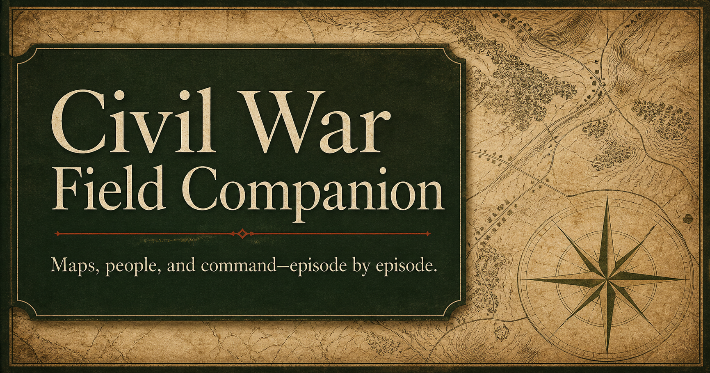

Civil War Field Companion
A searchable visual companion to The Civil War & Reconstruction podcast. Each completed episode guide puts the relevant geography, troop movements, timeline, people, chain of command, and historical images in one place for use while listening.
- High-level, modern, and historical maps
- Timestamped factual episode timelines
- People and command structures
- Battlefield and historical photographs
- A public best-effort archive that continues to grow
The guides are generated from podcast transcripts and historical research. They are published as a best-effort reference and may contain errors.